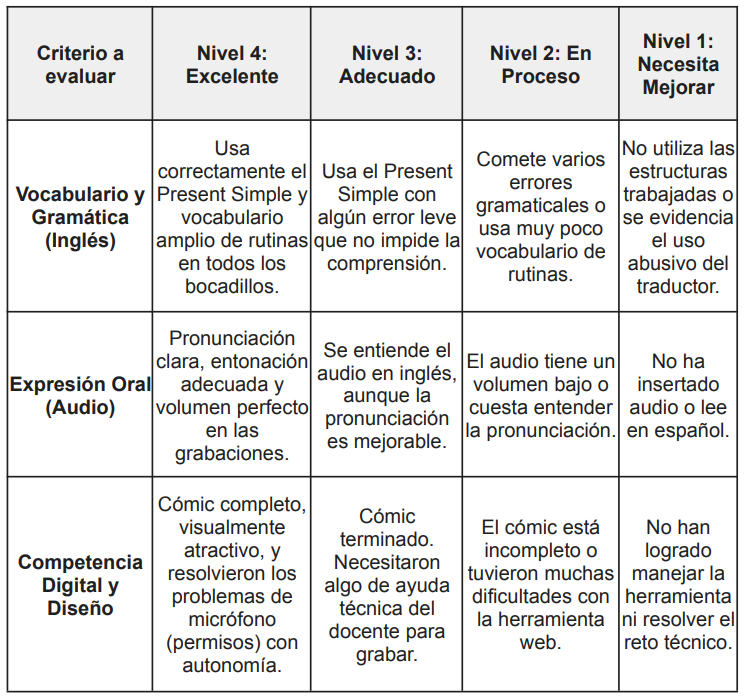
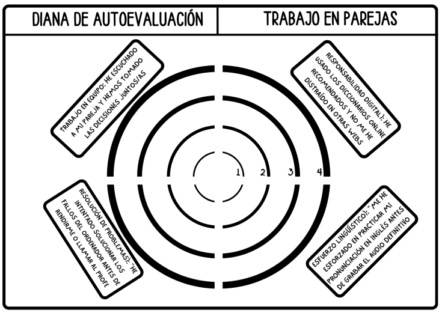

Guía Didáctica
1. Tareas y Criterios de Evaluación Relacionados:
- Tarea de Entrenamiento Hacker Ético: Evaluada a través del CE.5.1 (reflexionar sobre el funcionamiento e idiomas) y el CE.6.2 (utilizar recursos digitales de forma responsable y respetando la propiedad intelectual).
- Tarea de Creación (Drafting): Evaluada con el CE.2.2 (redactar y editar textos en soportes digitales, respetando la propiedad intelectual).
2. Instrumentos de Evaluación Aplicados:
- Rúbrica de Evaluación (Heteroevaluación): Se aplica en la fase del "Gran estreno". Evalúa aspectos de Competencia Lingüística y de Competencia Digital (uso de la herramienta de diseño, resolución de problemas técnicos).

- Diana de Autoevaluación (Coevaluación): Se utiliza al finalizar las fases de diseño para que el alumnado autoevalúe el trabajo en equipo, la resolución de problemas y la responsabilidad digital (midiendo variables clave del currículo oculto).

3. Observaciones y DUA:
- Apoyándonos en rutinas de pensamiento previas (Tarea 1.1), se establece que para evitar la frustración técnica, cada proyecto digital debe iniciar con un "minitutorial" técnico, apoyándose en la accesibilidad intrínseca que nos proporcionan plataformas como Canva.
https://docs.google.com/document/d/1q6Xg0sw7UQ3VIgMg_SX3XxgHckqxyYw76zZqQ-Juu1k/edit?usp=sharing